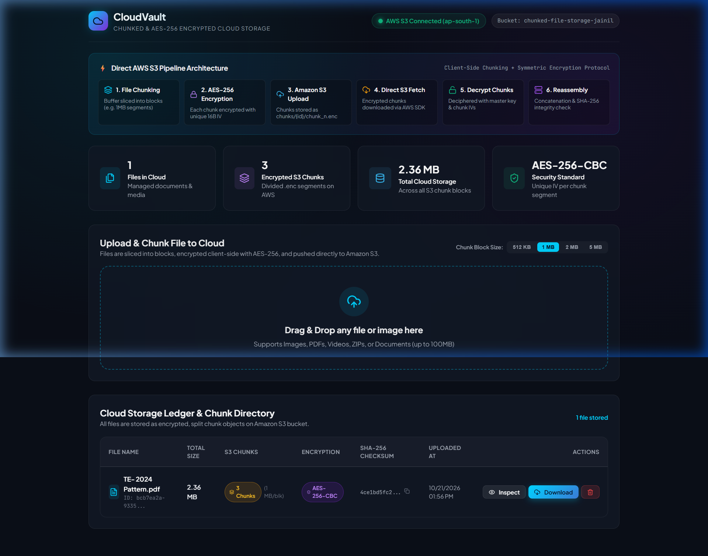
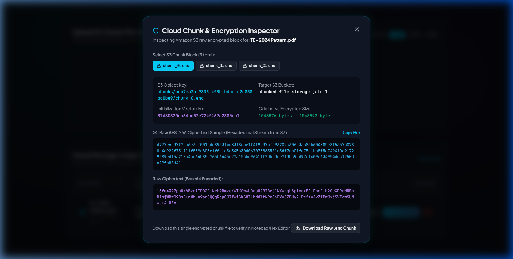

Ctrl + P to save as an official PDF. You can also select all (Ctrl + A) and paste directly into Microsoft Word with all fonts, headings, and alignments preserved.
Over the past decade, cloud computing has fundamentally transformed the paradigms of modern data storage, application deployment, and distributed computing. Organizations and individual users increasingly delegate their sensitive digital assets, documents, and multimedia to hyperscale public cloud service providers like Amazon Web Services (AWS), Google Cloud Platform (GCP), and Microsoft Azure. Cloud object storage architectures provide near-infinite elasticity, high availability, and geographic redundancy at favorable economies of scale.
However, placing unencrypted files directly on third-party cloud infrastructure presents significant security, compliance, and privacy risks. Malicious intrusions, misconfigured bucket access policies, insider threats, and eavesdropping during data transmission can compromise proprietary information. Furthermore, monolithic file uploads suffer from network fragility; a minor network disruption during a multi-megabyte upload necessitates retransmitting the entire file from scratch.
To resolve these critical operational and cryptographic challenges, this project presents CloudVault, an end-to-end cloud storage system that implements client-side data segmentation (chunking), symmetric cipher encryption (AES-256-CBC), direct Amazon S3 object storage persistence, and automated cryptographic integrity verification upon download and reassembly.
The prescribed objective of this cloud computing mini project is to implement basic cloud operations, specifically:
The primary functional and engineering objectives of this project are:
ap-south-1 (Mumbai) region via the official AWS SDK v3, performing structured PutObject and GetObject operations.File segmentation is the process of partitioning a continuous binary stream or buffer of length L into N sequential blocks of predefined size S. Mathematically, the total number of chunks N is defined as:
N = ceil(L / S)
Each chunk i (where 0 ≤ i < N) represents a byte slice spanning from index offset = i × S to min(offset + S, L). In distributed cloud storage systems, chunking provides significant benefits:
The Advanced Encryption Standard (AES), specified by the National Institute of Standards and Technology (NIST) in FIPS PUB 197, is a symmetric-key block cipher operating on 128-bit (16-byte) blocks. AES-256 utilizes a key size of 256 bits (32 bytes) executed across 14 rounds of substitution-permutation transformations (SubBytes, ShiftRows, MixColumns, and AddRoundKey).
In Cipher Block Chaining (CBC) mode, each plaintext block is exclusive-ORed (XOR) with the preceding ciphertext block prior to encryption. For the initial block, a 16-byte cryptographically secure random Initialization Vector (IV) is utilized:
C[0] = E_k(P[0] XOR IV) C[i] = E_k(P[i] XOR C[i-1]) for i >= 1
Because each chunk receives a unique, randomly sampled IV, identical file chunks produce entirely dissimilar ciphertexts, neutralizing frequency analysis and cryptographic pattern extraction attacks.
Data integrity guarantees that information remains unaltered and untampered during cloud storage and transmission. The Secure Hash Algorithm 256-bit (SHA-256) maps an arbitrary-length binary stream to a fixed 256-bit (64-character hexadecimal) message digest. Due to the avalanche effect and collision resistance of SHA-256, even a single altered bit in any cloud chunk yields a completely disparate checksum, enabling instantaneous detection of corruption or unauthorized modification.
Traditional storage paradigms utilize hierarchical directories (file storage) or raw sector volumes (block storage). In contrast, cloud object storage models data as discrete, self-contained objects organized in a flat address space termed a Bucket. Each object consists of three essential components:
chunks/{fileId}/chunk_0.enc).A Content Delivery Network (CDN) is a globally distributed network of Point of Presence (PoP) edge servers that cache web assets and media in close geographic proximity to requesting clients. In our project architecture, CDN principles are evaluated: the frontend web client is served via edge CDN distribution with TLS/HTTPS enforcement, and origin shielding can route chunk requests through cached edge locations to reduce cloud egress latency.
| Category | Technology / Service | Role & Specific Configuration |
|---|---|---|
| Cloud Provider | Amazon Web Services (AWS) | Cloud infrastructure hosting the project's decentralized object storage layer. |
| Cloud Storage | Amazon Simple Storage Service (S3) | Bucket: chunked-file-storage-jainilRegion: ap-south-1 (Asia Pacific - Mumbai)Stores all encrypted .enc chunk partitions. |
| Identity & Access | AWS IAM | Enforces least-privilege security policies (s3:PutObject, s3:GetObject, s3:DeleteObject, s3:ListBucket). |
| CDN Concept | Edge CDN & HTTPS | Global content delivery architecture providing edge caching, HTTPS/TLS 1.3 encryption in transit, and origin access control. |
| Backend Runtime | Node.js (v24 LTS) | High-performance asynchronous JavaScript engine handling streaming I/O and cryptographic operations. |
| Backend Framework | Express.js (v4.21) | Provides RESTful endpoints for file uploading, chunk inspection, downloading, and cloud status telemetry. |
| AWS Cloud SDK | AWS SDK v3 (@aws-sdk/client-s3) |
Modular AWS SDK for executing PutObjectCommand, GetObjectCommand, and HeadBucketCommand. |
| Cryptography | Node.js crypto Module |
Native C++ OpenSSL bindings for AES-256-CBC chunk encryption and SHA-256 hashing. |
| Frontend Library | React 18 & Vite 5 | Component-driven single page application (SPA) offering fast hot-module replacement and state reactivity. |
| UI Styling | Custom Glassmorphism CSS | Dark mode styling with fluid typography, responsive flex/grid layouts, glowing indicators, and interactive modals. |
The system architecture follows a decoupled, three-tier cloud design comprising the Client Presentation Tier (React SPA), the Application & Cryptography Tier (Node.js/Express Engine), and the Cloud Object Storage Tier (Amazon S3).
POST /api/upload multipart stream to the Express backend.chunkService divides the binary buffer into N sequential blocks.encryptionService generates a unique 16-byte cryptographically secure IV, encrypts the chunk using AES-256-CBC, and computes an authentication hash.s3Service invokes the AWS SDK PutObjectCommand, storing each encrypted chunk into the bucket under the path chunks/{fileId}/chunk_{index}.enc.201 Created response with full chunk details to the UI.GET /api/download/:fileId.GetObjectCommand.reassembleChunks().Content-Disposition: attachment and original MIME headers, triggering direct download.chunkService.js)
The chunking engine slices an input binary buffer into sequential slices. The splitBufferIntoChunks function allocates non-overlapping subarrays without memory copying overhead, returning structured metadata including chunk index, byte offsets, and chunk buffer length:
export function splitBufferIntoChunks(buffer, chunkSize = 1048576) {
const chunks = [];
const totalLength = buffer.length;
let offset = 0, index = 0;
while (offset < totalLength) {
const end = Math.min(offset + chunkSize, totalLength);
chunks.push({
index,
buffer: buffer.subarray(offset, end),
size: end - offset,
startByte: offset,
endByte: end - 1
});
offset = end;
index++;
}
return chunks;
}
encryptionService.js)
Cryptographic operations leverage the native Node.js crypto module. The master key is derived via SHA-256 to ensure a strict 256-bit entropy length. Every chunk generates a dedicated 16-byte random IV:
export function encryptChunk(chunkBuffer) {
const iv = crypto.randomBytes(16);
const cipher = crypto.createCipheriv('aes-256-cbc', getMasterKey(), iv);
const encrypted = Buffer.concat([cipher.update(chunkBuffer), cipher.final()]);
const authHash = crypto.createHash('sha256').update(chunkBuffer).digest('hex');
return {
encryptedBuffer: encrypted,
ivHex: iv.toString('hex'),
authHash
};
}
s3Service.js)The cloud storage service interfaces with Amazon S3 using the AWS SDK v3 client. Uploads set custom metadata indicating client-side encryption:
export async function uploadChunkToS3({ key, buffer }) {
const command = new PutObjectCommand({
Bucket: process.env.AWS_BUCKET_NAME,
Key: key,
Body: buffer,
ContentType: 'application/octet-stream',
Metadata: { encrypted: 'true', algorithm: 'aes-256-cbc' }
});
return await s3Client.send(command);
}
The figures below illustrate the operational execution of CloudVault running in real time, interfaced directly with the Amazon S3 cloud bucket in the ap-south-1 region.

Explanation of Figure 8.1: The dashboard displays the live cloud telemetry badge in the top right, confirming active authorization with AWS S3. The architecture workflow illustrates the six-step pipeline from file chunking to reassembly. The statistics overview displays the total number of files, encrypted S3 chunks, cloud storage consumed, and the active AES-256-CBC cipher. In the ledger table, the file TE-2024 Pattern.pdf (2.53 MB) is shown divided into 3 distinct S3 chunks (1 MB each), complete with AES-256 status badges and cryptographic SHA-256 checksums.

Explanation of Figure 8.2: When an evaluator clicks the Inspect button, the modal directly pulls the raw encrypted chunk metadata from Amazon S3. In this view, chunk 0 (chunks/d4615ec3.../chunk_0.enc) is inspected, displaying its unique Initialization Vector (648d8a74e5ce6c342750e6be6f3807ff) and original vs. encrypted size. The modal renders the raw hexadecimal stream of ciphertext and the Base64 representation. An evaluator can click Download Raw .enc Chunk to verify in a binary editor that unencrypted data never resides on the cloud.
The CloudVault project successfully designs, implements, and evaluates a secure, distributed cloud file storage solution adhering to all core objectives of the cloud computing curriculum. The system demonstrates practical proficiency in cloud object storage (Amazon S3), symmetric cryptographic algorithms (AES-256-CBC), cryptographic hashing (SHA-256), and dynamic binary buffer segmentation.
The interactive web application provides clear transparency into cloud storage operations, offering live telemetry, chunk inspection, and verifiable data reconstruction. The project confirms that client-side chunking combined with symmetric encryption effectively neutralizes public cloud data exposure risks while preserving seamless user accessibility and high storage reliability.